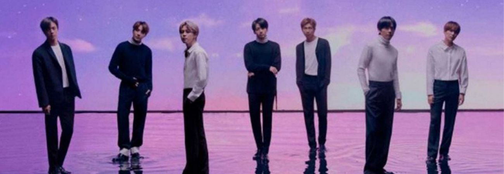
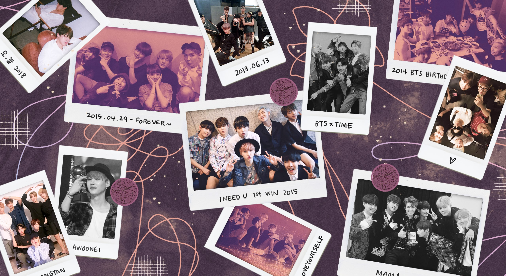

La historia de BTS...

2013 — 2 Cool 4 Skool
BTS debutó el 13 de junio de 2013 con 2 Cool 4 Skool y la canción “No More Dream”. En esta primera era, el grupo presentó una imagen juvenil y una propuesta centrada en los sueños, las expectativas sociales y las inquietudes de los jóvenes.
2014 — Skool Luv Affair
Con Skool Luv Affair, BTS continuó desarrollando su concepto juvenil, incorporando temas relacionados con el amor, las relaciones y las experiencias de la adolescencia.
2014 — Dark & Wild
Dark & Wild mostró una evolución en el sonido y la imagen del grupo. BTS comenzó a experimentar con diferentes estilos musicales y presentó una propuesta más madura.
2015–2016 — The Most Beautiful Moment in Life
La serie The Most Beautiful Moment in Life marcó una etapa importante en la trayectoria de BTS. Sus canciones exploraron temas como la juventud, la amistad, los sueños, las dificultades y el crecimiento personal.
2016 — Wings
Con Wings, BTS presentó una etapa más artística y conceptual. El álbum abordó temas relacionados con las tentaciones, las decisiones personales y el crecimiento, acompañado de conceptos visuales inspirados en diferentes elementos literarios y artísticos.
2017 — Love Yourself: Her
Love Yourself: Her inició una nueva etapa centrada en el amor y las diferentes emociones presentes en las relaciones. La canción “DNA” se convirtió en uno de los temas más representativos de esta era y ayudó a aumentar la presencia internacional del grupo.
2018 — Love Yourself: Tear
Love Yourself: Tear presentó una perspectiva más emocional sobre las relaciones y la separación. El álbum mostró una faceta más madura de BTS y alcanzó un importante reconocimiento internacional.
2018–2019 — Love Yourself: Answer
Love Yourself: Answer recopiló canciones de la serie Love Yourself y cerró esta etapa. Su mensaje se relacionó con la aceptación personal y la importancia de aprender a quererse a uno mismo.
2019 — Map of the Soul: Persona
Map of the Soul: Persona inició una nueva etapa conceptual inspirada en ideas relacionadas con la identidad y la personalidad. El álbum exploró la forma en que una persona se presenta ante los demás y cómo se relaciona con su propia identidad.
2020 — Map of the Soul: 7
Map of the Soul: 7 continuó los conceptos de identidad y autoconocimiento. El álbum combinó nuevas canciones con temas anteriores y reflejó diferentes etapas de la trayectoria de BTS.
2020 — BE
BE fue creado durante un periodo marcado por la pandemia de COVID-19. El álbum expresó emociones relacionadas con la incertidumbre, la esperanza y la necesidad de encontrar nuevas formas de conexión. “Dynamite” se convirtió en uno de los mayores éxitos internacionales del grupo.
2021 — Butter y Permission to Dance
Durante 2021, BTS lanzó canciones en inglés como “Butter” y “Permission to Dance”. Esta etapa consolidó su presencia en las listas musicales internacionales y estuvo acompañada de numerosas presentaciones y reconocimientos.
2022 — Proof
Proof fue una antología que reunió diferentes etapas de la carrera de BTS y presentó nuevas canciones. Este lanzamiento sirvió como una recopilación de su trayectoria hasta ese momento y dio paso a una nueva etapa de actividades individuales.
2022–2025 — Etapa de proyectos individuales
Durante este periodo, los integrantes desarrollaron álbumes, canciones y otros proyectos individuales mientras BTS continuaba como grupo. También se produjo el cumplimiento del servicio militar obligatorio de los integrantes surcoreanos.
2025–2026 — Regreso de BTS
Después de esta etapa, los siete integrantes volvieron a reunirse para continuar las actividades grupales. En 2026, BTS inició una nueva era con el álbum ARIRANG, lanzado el 20 de marzo de 2026, marcando su regreso con nueva música y actividades como grupo.
2026 — ARIRANG
ARIRANG representa una nueva etapa en la historia de BTS. El grupo retomó sus actividades como conjunto y comenzó una nueva gira mundial, continuando su trayectoria musical y su conexión con ARMY alrededor del mundo.

BTS y ARMY
A lo largo de todas sus eras, BTS ha mantenido una relación cercana con sus seguidores, conocidos como ARMY. Cada etapa del grupo ha presentado diferentes conceptos, estilos musicales y mensajes que forman parte de su evolución artística.